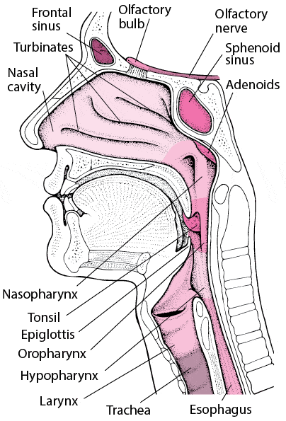
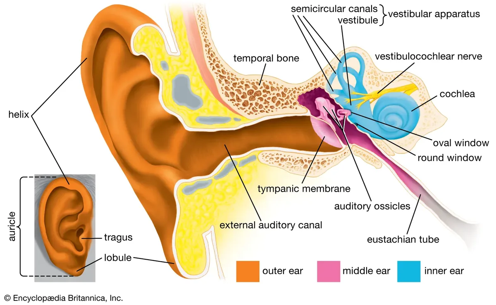
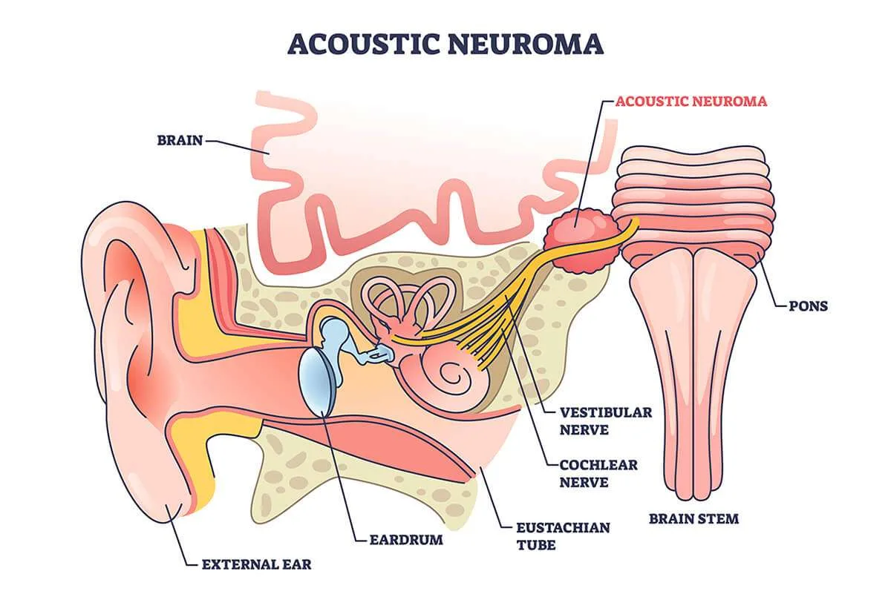
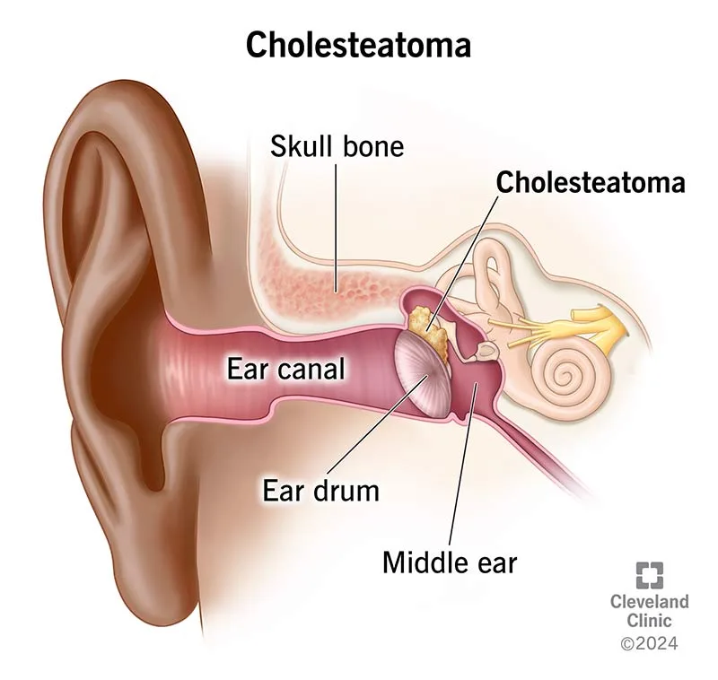
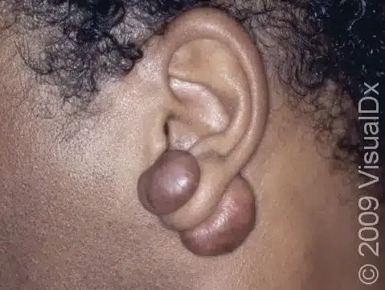
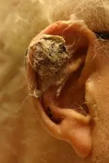
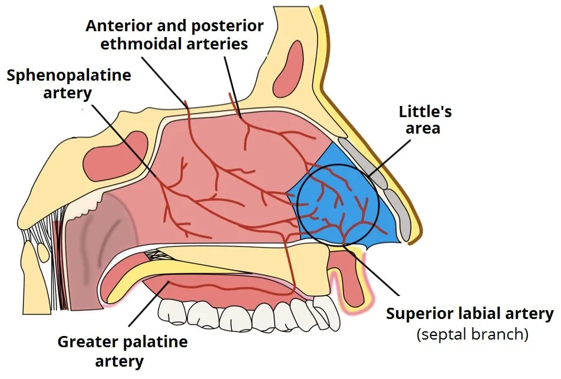
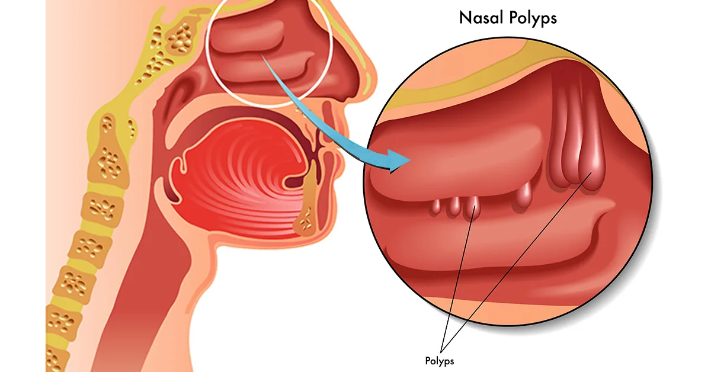

Expanded Nursing Uganda Explanation
Throat (ENT) should be understood beyond a short definition. Link the concept to patient history, focused assessment, common risks, nursing priorities, documentation and evaluation of outcomes.
01 FOREIGN BODY IN THE EAR AND NOSE
A foreign body refers to any object that is not naturally present in a specific area of the body.
Foreign bodies can be objects that are accidentally inserted or lodged in these areas, causing discomfort, obstruction, and potential complications.
02 FOREIGN BODY IN THE EAR:
A foreign body in the ear refers to an object that has entered the ear canal and is not supposed to be there .
Most objects that get stuck in the ear canal are placed there by the person themselves. Children who are curious about their bodies and interesting objects, are the group most often having this problem (children aged 9 months to 8 years).
The most common things they put in their ears include Beads, Food (especially beans), Paper, Cotton swabs, Rubber erasers, Small toys, Marbles, Small shells.
03 Types of Foreign Bodies in the Ear:
Foreign bodies in the ear can be categorized into two main groups: inanimate and animate. Inanimate foreign bodies can further be classified as organic or inorganic.
1. Inanimate Foreign Bodies : Inanimate refers to objects that lack life , consciousness, or the ability to move or grow on their own . Inanimate objects do not possess the characteristics of living organisms, such as metabolism, reproduction, or response to stimuli. a. Organic : Organic refers to substances that are from living organisms or contain carbon-based compounds
- Earwax : Excessive buildup of earwax can cause blockage and discomfort in the ear canal.
- Food : Small food particles, such as beans, can accidentally enter the ear and get stuck.
- Paper : Paper scraps or small pieces can find their way into the ear canal.
- Cotton swabs : The improper use of cotton swabs can push wax and debris further into the ear canal, causing blockage.
- Rubber erasers: Small rubber erasers, often used on pencils, can become lodged in the ear.
- Small toys : Children may insert small toys into their ears out of curiosity.
- Marbles : Small marbles can accidentally enter the ear canal and become stuck.
- Small shells : Shells from the beach or other small objects can get lodged in the ear.
b. Inorganic : Inorganic refers to substances that are not derived from living organisms and do not contain carbon-based compounds. The also include metallic and plastic compounds.
- Beads : Small beads can be inserted into the ear and become trapped.
2. Animate Foreign Bodies: Animate refers to objects that are alive, possess life, or exhibit characteristics of living organisms . Animate objects have the ability to move, grow, reproduce, and respond to stimuli.
- Insects : Insects, such as flies or ants, can crawl or fly into the ear canal, especially when sleeping on the floor or outdoors. Live insects, such as bed bugs, mosquitoes, and cockroaches can access the ear too.
- Flies may lay eggs in patients with chronic suppurative otitis media (CSOM), which hatch into maggots.
04 Signs and Symptoms of foreign bodies in the Ear.
- Pain : This is often the most prominent symptom, ranging from mild discomfort to excruciating pain. The ear canal is highly sensitive, and any irritation or pressure can trigger pain.
- Hearing Loss : Partial or complete hearing loss in the affected ear is common, especially if the object obstructs a significant portion of the ear canal.
- Ear Discharge : Depending on the object and the time it has been present, discharge may occur. This can include blood (especially if the object is sharp), pus (indicating infection), or inflammatory fluid.
- Itching and Irritation : The ear canal’s sensitivity can lead to intense itching and irritation, often prompting the individual to scratch or rub the ear.
- Feeling of Fullness or Pressure : A sense of fullness or pressure in the ear is common, especially if the object is lodged deep within the canal.
Less Common
- Nausea and Vomiting: Irritation of the ear canal can sometimes stimulate the vagus nerve, which can lead to nausea and vomiting.
- Coughing or Throat Clearing: Similar to nausea, stimulation of the vagus nerve can also cause coughing or throat clearing.
- Buzzing or Ringing in the Ear (Tinnitus) : This may occur if the object is moving or if it irritates the inner ear structures.
- Dizziness and Vertigo: In rare cases, a foreign body can cause inflammation or pressure build-up in the middle ear, leading to dizziness and vertigo.
- Unsteady Walking : This can result from the dizziness and vertigo associated with middle ear dysfunction.
Based on the Object:
- Insects : The movement of an insect within the ear can cause a buzzing sensation and discomfort.
- Earwax Impaction : This can lead to a feeling of fullness, pressure, and hearing loss on the affected side.
Diagnosis and Investigations of Foreign Bodies in the Ear:
1. Patient History : Obtain a detailed history from the patient or caregiver regarding the nature of the foreign body, duration of symptoms, and any attempts at removal.
2. Physical Examination : Perform a thorough examination of the ear, including inspection of the external ear, otoscopy to visualize the ear canal and tympanic membrane, and assessment of any associated symptoms such as pain, discharge, or hearing loss.
3. Imaging Studies : In some cases, imaging studies may be required to further evaluate the foreign body and its location. The choice of imaging modality depends on the suspected type and location of the foreign body. Common imaging options include:
- a. X-ray : X-rays can be useful for detecting radiopaque foreign bodies such as metal objects or button batteries. However, they may not be able to visualize non-radiopaque objects or provide detailed information about the foreign body’s location.
- b. CT Scan : CT scans are more sensitive than X-rays and can provide detailed images of the ear and surrounding structures. They are particularly useful for evaluating complex or deep-seated foreign bodies.
4. Audiometry : If there is concern about potential damage to the ear or hearing loss, audiometry may be performed to assess the patient’s hearing function.
05 Treatment and Management
When a patient arrives at the hospital with a foreign body in their ear, we begin by offering a warm welcome and ensuring their comfort. We then proceed with the following steps:
1. Initial Assessment :
- Gather Biodata : We collect basic information such as name, age, contact details, and medical history.
- Detailed History : We ask the patient about the incident, the nature of the object, the duration of the problem, and any associated symptoms.
2. ENT Specialist Consultation :
- Referral : The patient is promptly referred to an Ear, Nose, and Throat (ENT) specialist.: The ENT specialist examines the ear using an otoscope to visualize the foreign body and assess its location and nature.
3. Treatment Approach :
- The ENT specialist will determine the most appropriate method for removing the foreign object based on factors such as its size, shape, material, and location. Techniques vary widely and may involve gentle suction, small forceps, looped instruments, or magnetic tools for metallic objects.
- Ear Irrigation : If the eardrum is intact, warm water irrigation using a small catheter can be employed to flush out the object.
- Sedation : For young children who cannot tolerate painful procedures, sedation may be necessary.
4. Specific Cases :
- Insects : Insects in the ear canal are usually killed with lidocaine (an anesthetic) or mineral oil and then flushed out with gentle irrigation.
- Button Batteries : These require urgent removal due to the risk of chemical burns.
- Food or Plant Material : These need prompt attention as they can swell when moistened, causing further obstruction and discomfort.
- Living foreign bodies can be killed by instilling oily drops into the ear, suffocating the insect, which can then be removed with forceps or a syringe.
- Metallic foreign bodies , glass beads, and small food grains may be removed by syringing.
- Magnets can sometimes be used if the object is metal.
- Suction devices may also help pull out the object.
- Use tweezers. If the object is easy to see and grasp, gently remove it with tweezers
- After removal, re-examine the ear to check for any injury to the ear canal.
- Antibiotic ear drops may be prescribed to prevent infection.
5. Post-Removal Care :
- Antibiotic Drops : After the object is removed, antibiotic drops may be prescribed for 5-7 days to prevent infection.
- Follow-up: A follow-up appointment within a week is recommended to ensure the ear is healing properly. If any bleeding, discharge, or pain persists, further evaluation is necessary.
6. Urgent Removal Situations :
- Significant Pain : If the foreign body causes intense pain or discomfort.
- Hearing Loss : If there is a significant decline in hearing.
- Dizziness : If the patient experiences dizziness or vertigo.
- Don’t use forceps to try to grasp the object as it will only push it further in the ear.
- If the foreign body has an edge to grab, remove with Hartmann forceps.
- Syringe the ear with lukewarm water
- If the foreign body cannot be removed by syringing, remove with a foreign body hook.
- General anaesthesia may be essential in children.
- Insects : Kill by using clean cooking oil or water into the ear, then syringe out with warm water.
For smooth round Foreign bodies.
- Syringe the ear with clean Luke warm water
- If Foreign body cannot be removed by syringing , remove with a foreign body hook.
- General anaesthesia may be essential in children and sensitive adult
- Do not use forceps to try to grasp round objects as this will only push them further in the ear.
For other Foreign bodies
- If there is an edge to grab, remove with Hartmann(crocodile) forceps.
For insects in the ear
- Kill these by inserting clean cooking oil or water into the ear, then syringe out with warm water.
- Cockroaches are better removed by a crocodile forceps since they have hooks on their legs that make removal by syringing impossible.
For impacted seeds :
- Don’t syringe with water as the seed may swell and block the ear, so refer immediately if you cannot remove with the hook.
- Suction may be useful for certain Foreign Bodies
- Magnets are sometimes used if the objects are metallic.
- Give antibiotics ear drop to prevent infection and pain killers.
06 WAX IN THE EAR OR IMPACTED CERUMEN
This is accumulation of wax in the external ear that obstructs the external acoustic meatus .
Wax is a normal substance produced in the external ear canal and it can accumulate in it . It is made up of epithelial scales mixed with the secretions from special glands in the skin of the outer ear. Wax in the ear is normal & usually comes out naturally from time to time . In most people, the wax escapes as it is formed but in some it remains in the ear canal forming a wax plug and cause a problem by obstructing it and causing deafness.
- Excessive and/or thick wax production
- Small , tortuous and/ or hairy ear canal
- Use of ear pads
- Blocked ears
- Buzzing sound
- Sometimes there is mild pain
- Olive oil/vegetable oil or Glycerine or sodium bicarbonate or liquid paraffin ear drops can be applied three times a day for a few days and it will soften the impacted wax . After this wax may fall out by its own.
- If it fails, then remove it by ear syringing . The clean water used for ear syringing should be warm i.e. at body temperature and is done when the wax is soft. So as not to stimulate the inner ear and cause dizziness. The ear is then dried gently after the syringing & should be examined to exclude any damage to the tympanic membrane. N.B Advise the patient not to use any sharp object in the ear in an attempt to remove the wax as this may damage the ear drum. Don’t syringe the ear if there is history of discharge and also if there is pain.
Complications:
- Infection : Infection of the ear canal is possible, but usually responds well to antibiotic drops.
- Eardrum Damage : Attempting to remove a foreign body on your own can potentially damage the eardrum.
- Persistent Symptoms : Ongoing pain, bleeding, or discharge may indicate irritation or injury within the ear.
07 Foreign Bodies in the Nose
A foreign body in the nose refers to an object that has been inserted into the nasal cavity and is causing discomfort or obstruction.
Foreign bodies in the nasal passages are common, especially in children and mentally retarded adults. They often enter through the anterior nares, but can also come from the mouth or stomach during vomiting or coughing, or be left in the nose during nasal surgery.
Types of Foreign Bodies of the Nose
- Small Toys: Children, especially toddlers, may insert small toys like Lego pieces, beads, or small action figures into their noses out of curiosity or during play.
- Pieces of Eraser: Erasers from pencils or other stationery items can break off and become lodged in the nasal cavity.
- Tissue : Tissue paper or small pieces of tissue can be accidentally inserted into the nose, especially in cases where someone is trying to blow their nose.
- Clay (used for arts and crafts): Children who play with clay or modeling compounds may accidentally insert small pieces into their noses.
- Food : Peas, beans, nuts, or other small food items can find their way into the nasal cavity, particularly in young children who may put objects in their noses while eating or playing.
- Pebbles or Dirt : Children playing outdoors may accidentally insert small stones, pebbles, or dirt into their noses.
- Paired Disc Magnets : Paired disc magnets, sometimes used for attaching earrings or nose rings, can be a concern if accidentally inserted into the nose. They can cause damage to the nasal tissue over time.
- Button Batteries : Button batteries, commonly found in watches or small electronic devices, can be hazardous if inserted into the nose. They can cause serious injury and should be treated as an emergency.
Clinical Manifestations
- Visible foreign body
- Nasal congestion
- Persistent sneezing
- Difficulty in breathing
- Irritability
- Persistent crying in infants
- Blood-tinged nasal discharge
- Rhinorrhea
- Foul-smelling discharge
Diagnosis
- A history of nasal obstruction and unilateral blood-stained, foul-smelling discharge should raise suspicion of a foreign body.
- Anterior rhinoscopy may reveal the foreign body, which might be obscured by mucopurulent discharge and granulations.
- Probing can detect the foreign body, and radiological examination can help identify radiopaque foreign bodies.
Management
- The patient is usually held in an upright position, and the nasal fossae are illuminated. A curved hook is used to gently pull the foreign body forward. An Eustachian catheter is often useful for this purpose.
- For uncooperative patients or deeply seated foreign bodies, general anesthesia may be needed.
Removal techniques
Before Removal: Reduce swelling: Apply 0.5% phenylephrine (Neo-Synephrine) to shrink the nasal lining and Provide pain relief: Use topical lidocaine to numb the area.
- Direct utilizing tools like forceps, curved hooks, cerumen loops, or suction catheters to directly see and remove the object.
- Balloon Catheter Method : Pass a thin, lubricated, balloon-tip catheter past the object. Inflate the balloon, pull it forward to move the foreign body out through the nostril for removal.
- Self-Removal Methods like Blowing Nose : Encourage patients to try expelling the foreign body by blowing their nose while blocking the opposite nostril.
- Positive Pressure Ventilation: For Uncooperative Patients: In cases where direct removal isn’t possible, positive pressure ventilation can be used. A caregiver can deliver a gentle puff of air into the mouth to help dislodge the object. Positive pressure can also be delivered through the mouth using a bag mask (Ambu Bag) or through the nose using oxygen tubing.
Button batteries must be removed from the nose immediately because of the danger of liquefaction necrosis of the surrounding tissue.
Appropriate infection-control precautions must be taken because the foreign body will likely be expelled against the parent’s cheek and will be covered with mucus and possibly blood.
08 Nursing Uganda Clinical Lens
Use Foreign bodies of Ear, Nose as a practical nursing topic, not only a memorized definition. Prioritize airway, breathing, circulation, pain, asepsis, wound healing and early complication detection.
- What to understand first: define foreign bodies of ear, nose, identify the normal or expected pattern, then explain what changes when the patient is unwell.
- Why it matters in care: the nurse must recognize risk early, explain findings clearly, document accurately and know when to escalate.
- How to revise it: connect each point to assessment, nursing diagnosis or care problem, intervention, rationale and evaluation.
09 Assessment Guide
- Vital signs, pain, bleeding, perfusion, level of consciousness and injury pattern.
- Wound appearance, drainage, odour, swelling, temperature and surrounding skin.
- Fluid balance, mobility, nutrition, surgical site risk and ordered investigations.
10 Nursing Priorities, Rationales and Outcomes
- Stabilize urgent problems first, then prepare for investigations or theatre care.
- Maintain aseptic technique, pain control, wound care and documentation.
- Prevent shock, infection, pressure injury, deep vein thrombosis and delayed healing.
The rationale for these priorities is patient safety: nursing actions should prevent deterioration, reduce discomfort, support recovery and create clear evidence for the next caregiver.
- Expected outcome: The patient remains stable, wound healing progresses, pain is controlled and complications are recognized early.
11 Patient Teaching and Revision Check
- Explain foreign bodies of ear, nose in simple language the patient or caregiver can repeat back.
- Teach warning signs, medicine or follow-up instructions, hygiene or lifestyle points where relevant.
- For exams, prepare a short answer using: definition, causes or risk factors, signs, assessment, management, complications and prevention.
- For ward practice, document baseline findings, actions taken, patient response and the plan for review.
Illustrations and Diagrams (32)








24 more diagrams available, open the lesson for full illustrations.
Related Video Lectures
Watch nursing lecture videos on YouTube for this topic. Opens in a new tab.
Watch on YouTubeExternal link: YouTube may use its own cookies and terms. Nursing Uganda is not affiliated with YouTube.